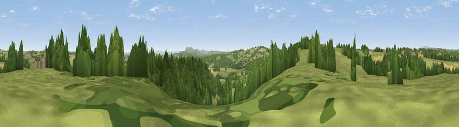

Viewpoint near Tedstone Wafre
#18268 in England · top 47% of its area beats it · near Tedstone WafreWhere it is
The exact computed spot (SO 68875 58775). Click the marker for map links.
The view, rendered

A 360° render of this exact spot computed from the terrain model, tree cover and land cover — summer colours, afternoon light, calibrated against photographs of famous viewpoints. Real trees, hedges and buildings will differ in detail.
The panorama
Grey silhouette: terrain skyline in each direction (720 bearings, Earth curvature and refraction included). Dashed green: skyline with trees (+15 m) and buildings (+8 m) as obstacles. Blue strip: how far the ground is visible on each bearing.
Where the view opens
Wedge length = distance to the farthest visible ground on that bearing (vegetation-aware). Rings at 10, 25 and 50 km.
What fills the view
47% grassland · 38% woodland · 15% cropland
Angular shares of the visible panorama (visual magnitude), not map area. Landscape diversity 0.45 (0–1 Shannon).
Key numbers
More beautiful places nearby
The staircase of upgrades: each row has a higher view potential than everything closer. Driving times are estimates from straight-line distance, calibrated against real road routing — check an actual route before setting out.
| Place | Direction | Drive | Score |
|---|---|---|---|
| Viewpoint near Tedstone Wafre | WSW · 1 km | ~3 min | 68.3 |
| Viewpoint near Bromyard | SSW · 4 km | ~9 min | 72.9 |
| Viewpoint near Martley | E · 6 km | ~12 min | 78.1 |
| Woodbury Hill | NE · 8 km | ~16 min | 81.6 |
| Viewpoint near Great Witley | NE · 8 km | ~17 min | 83.4 |
| North Hill | SSE · 15 km | ~27 min | 86.8 |
| Worcestershire Beacon | SSE · 16 km | ~28 min | 87.1 |
| Viewpoint near West Quantoxhead | SSW · 129 km | ~153 min | 87.9 |
52.22629, -2.45709 · source: screening · position refined by local search. Computed location — check access rights before visiting.